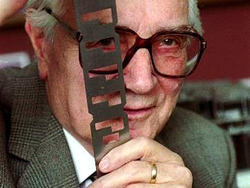
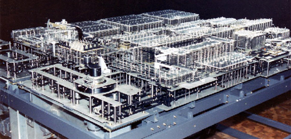
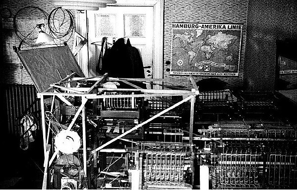
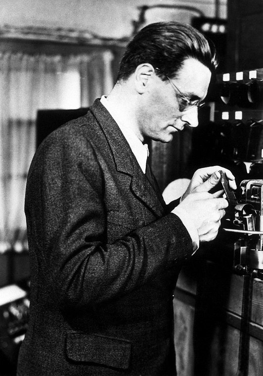
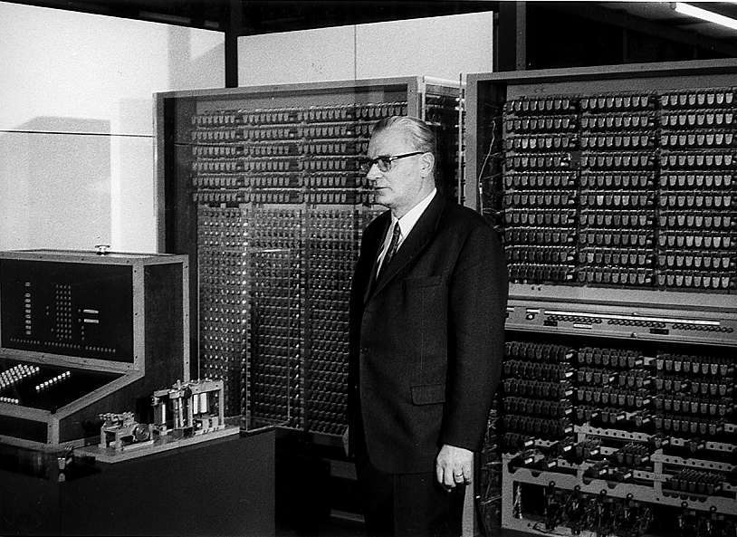
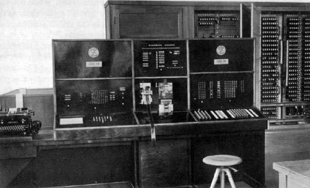
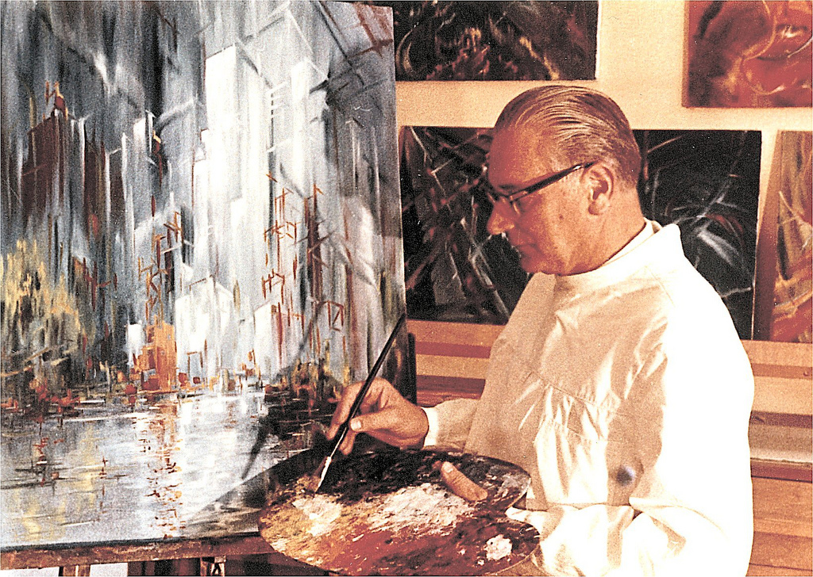
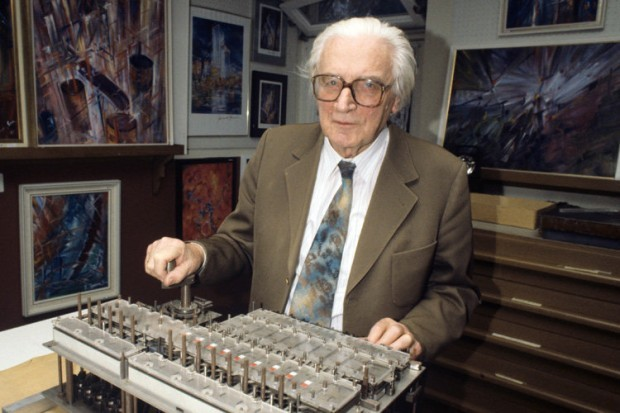

Konrad Zuse
(22 June 1910 Berlin – 18 December 1995 Hünfeld)
"The danger of computers becoming like humans is not as great as the danger of humans becoming like computers."
Konrad Zuse was born in Berlin. In 1935 he received his degree in engineering from the Berlin University of Technology. He worked a little at an aircraft factory. The talent of the inventor manifested itself in him in early childhood. Parents quickly appreciated this: they helped fund their son's experiments.
It was in the parents' apartment that a prototype computer was born - a mechanical calculator with an electronic drive Z1 (1938 year). It was the first to use the binary number system in practice, which formed the basis for the work of modern computers. As Konrad Zuse admitted several decades later, he was inspired to create a computer ... laziness. During his studies and work at an aircraft factory, he was extremely tired of endless calculations, so he began to develop a more advanced calculating machine than an adding machine.
photo of binary programmable computer Z1
Soon this hobby was so carried away by him that he quit his job, borrowed more money from friends and began to assemble a calculating machine on the table in the living room of his parents' apartment, experimenting with wires, relays and metal plates. Soon the binary machine took up half a room.
working living room
Zuse's invention was far from perfect, the device was constantly breaking down due to poor quality components. The work on a more perfect model was interrupted by the Second World War. Zuse was sent to the front, but only a month later he was recalled: the military industry of the "Third Reich" became interested in the developments. Engineers and scientists, who were influential in Hitler's entourage, interceded for Zuse. As a result, he got into the scientific elite.
In 1940, Zuse presented a modified prototype of the Z2 calculator, based on telephone relays. Problem conditions were entered using the keyboard. Since records and other rough parts often jammed, which led to malfunctions, Zuse came up with an ingenious solution: he began to encode tasks on the machine using holes in the used film.
However, the real breakthrough came a year later, when the modified Z3 model appeared. Weighing a ton, these large cabinets are considered the first functional programmable computer in history to be based on a binary number system. The memory of the binary calculator was 64 words with a length of 22 bits.
Zuse in front of Z3
The originals Z1, Z2 and Z3 have not survived to this day: they were destroyed during the bombing of Berlin in 1945. But Zuse managed to save the next model - Z4, on which work lasted for a total of six years: from 1944 to 1950. For the Z4, which already used vacuum tubes, Konrad Zuse developed the world's first high-level programming language, Plankalkül (which means "calculating plans" in German).
computer Z4
In 1949, Zuse founded the Zuse KG company, which lasted until 1967. The company produced specialized computing devices for the optical industry, the aircraft industry, and university laboratories. Among them is the first computer with magnetic storage media.
Zuse every year more and more lagged behind his American competitors - IBM and other firms. Post-war Germany was not the best place to invest in the electronic future: the government spent all the money on rebuilding the country. In addition, Zuse did not have the infrastructure necessary for further development, and could not timely learn about new devices and programs.
In 1967, financial problems forced Konrad Zuse to sell his company to the Siemens concern. For several years he worked as a consultant in the concern, then gradually retired and took up his old hobby - painting. Zuse painted several portraits of the pioneers of the computer industry, including his main competitor, Bill Gates. Shortly before the death of Konrad Zuse in 1995, they met in Hanover, at the international computer fair CeBit. The portrait, presented to Gates at the meeting, adorned Geist's office at Microsoft for many years.
Zuse at his second favorite pastime
The Mountain View California Museum of Computer History posthumously recruited Konrad Zuse as the preeminent inventor of the first fully automated, programmed computer.
Thanks for attention